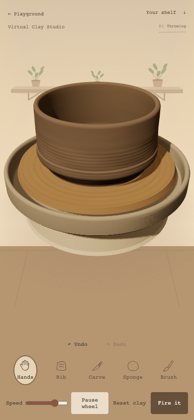
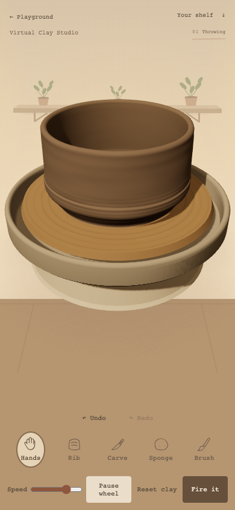

October 16, 2026 · local checkpoint
Equal smoothing updates now retain one interior material instead of creating 40. The isolated 4×CPU benchmark fell from 93.0 to 40.6ms median. Interior positions and colors match the baseline exactly.
Still not release-ready: frame-time spikes and real-device performance remain unresolved. This is a resource-reuse improvement, not a guarantee of smooth mobile rendering.


Methods and limitations · Isolated measurements · Final phone workflow